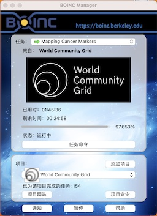

技术支持
博客声明
此博客没有收费项目，请各位谨防上当受骗。此博客不含广告，仅做公益的正版资源共享和技术交流
友情链接
© 2024 庞玺桐 版权所有吉ICP备2024017023号-1
此页面为庞玺桐的博客的全部页面的导航
此页面为此网站和庞玺桐的所有开源项目的：开源协议与版权声明，此协议对开发者极为重要，需要所有引用我的开源项目的开发者仔细阅读
此字体为庞玺桐借助Vectornator和Calligraphr，将中国元素添加到英文字体中，字母的所有元素均由华文楷体的中文笔画和基本图形组成，希望能对您的创作做出帮助！
我们可能忽略了一个事实，就是，过程通常比结果更美好，一段好的过程，通常都会带来一个好的结果，我们不妨利用自己的闲暇时间，去做一件有意义的事情，专心致志的去维护自己所选择的业余项目，并且坚持自己的梦想，为了你的梦想，不惜一切！
此页面为WTCU网站，一个大型多功能开源HTML研究项目，由我们的团队成员组成，力求作为我们的研究基地，包含多个研究项目和研究成果
此页面为帮助处境艰难的开源者或弱势群体度过难关的援助的公益页面
此页面为此博客通用的评论端后台，由庞玺桐自托管的Artalk服务器提供服务
在2022年我经历了……，精彩的2022年即将逝去，这一年经历了很多的事情，没有人能像白纸一样没有故事，成长的代价就是失去原来的样子，但是我们应当燃起斗志，学会突破自我，发扬个性，我相信人生而平等，而我生来不凡。那就希望在即将到来的2023年，……，做出真正的自己！
World Community Grid
BOINC的World Community Grid是一个，通过创建由全球志愿者社区授权的超级计算机来加速科学的非营利性公益志愿组织. |
 |
此文章用于macOS13软件在故障时进行故障排除或紧急修复。
Minecraft Java 进阶玩法共享！
测试你的密码被暴力破解的时间，并给予相应的评价
此页面为随机数生成器，可以帮助你选择今天吃什么或今天去哪玩
此页面为高考倒计时，每年八月份更新
关注我